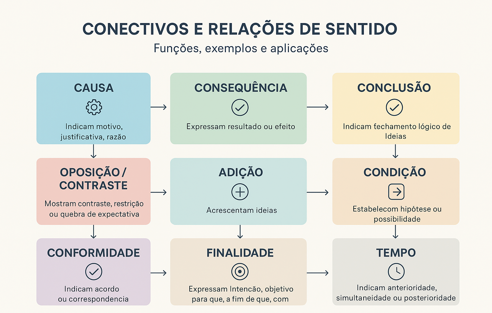

Conectivos e Relações de Sentido: guia completo para interpretação, redação e provas
Os conectivos (conjunções, preposições, advérbios e locuções conectivas) são muito mais do que simples "emendas gramaticais": eles são os operadores lógicos do pensamento. Dominar as relações de sentido dos conectivos é um requisito duplo para quem presta exames: garante pontos cruciais nas questões de interpretação e leitura crítica do ENEM, do PAES UEMA e de concursos públicos, além de ser a chave para alcançar a nota máxima na Competência 4 da redação.
Muitos candidatos erram questões de coesão porque decoram listas frias de palavras sem analisar o contexto discursivo. Um conectivo não possui um sentido "engessado": a conjunção "como", por exemplo, pode expressar causa, comparação ou conformidade, a depender de onde está posicionada e de como articula as orações. Saber ler o valor semântico exato da conexão evita interpretações distorcidas e impede a troca indevida de termos na reescrita de frases.
Neste guia definitivo, você entenderá a diferença entre coesão referencial e sequencial, dominará a sutil fronteira entre concessão e adversidade, aprenderá a decifrar os "conectivos camaleões" e resolverá nosso quiz avançado com 10 questões comentadas no padrão das principais bancas.

1. Mecanismos de Coesão: Referencial vs. Sequencial
A linguista Ingedore Koch demonstra que a coesão textual se divide em duas grandes engrenagens complementares. Compreender essa divisão ajuda a identificar o que a banca está cobrando no enunciado:
Coesão Referencial (Evita repetições / Retoma termos)
Mecanismo pelo qual palavras (pronomes, numerais, sinônimos, hiperônimos ou elipses) apontam para elementos já citados (anáfora) ou que ainda serão introduzidos (catáfora). Seu objetivo é manter o leitor conectado aos personagens, conceitos e assuntos centrais sem que o texto fique redundante.
Coesão Sequencial (Encadeia ideias / Cria progressão lógica)
Mecanismo responsável por fazer o texto avançar no tempo e no raciocínio. Opera por meio de conectivos e tempos verbais que articulam orações e parágrafos, estabelecendo vínculos lógicos de causa, oposição, condição, finalidade, proporção ou conclusão entre as partes do discurso.
A Armadilha Clássica: Não confunda Causa com Consequência!
A causa é o motivo, a origem, o que acontece primeiro no plano da realidade. A consequência é o resultado, o efeito, o que decorre do motivo. Em questões de reescrita, as bancas adoram inverter a relação:
• "Como choveu torrencialmente (Causa), a rua alagou (Consequência)."
• Se a questão afirmar que "o alagamento foi a causa da chuva", o item está incorreto! Guarde o macete: Causa = O que gera / Consequência = O que sobra.
2. O Duelo Mais Cobrado: Adversidade vs. Concessão
Ambos os conectivos introduzem ideias de contraste e oposição, mas a força argumentativa de cada um é completamente diferente. Esse é o ponto que mais derruba candidatos no ENEM e no PAES UEMA:
Anatomia do contraste discursivo:
- Oração Coordenada Adversativa (mas, porém, contudo, todavia, no entanto): O conectivo introduz o argumento mais forte, que prevalece na balança do autor. Se você diz "Ele é muito inteligente, mas não estuda", o peso final do enunciado recai sobre o fato negativo de não estudar. A adversativa desqualifica ou supera o argumento anterior.
- Oração Subordinada Concessiva (embora, ainda que, mesmo que, conquanto, apesar de): O conectivo introduz uma ideia que cede (reserva/obstáculo superado). Ele admite uma verdade contrária apenas para valorizar ainda mais a oração principal, que sai vitoriosa. Em "Embora não estude, ele é muito inteligente", o foco positivo da inteligência vence a ressalva.
Comparação de Impacto Argumentativo:
Estrutura 1 (Adversativa): "O projeto é inovador, mas tem custo financeiro inviável." → Tese implícita: Não devemos aprovar o projeto (o custo alto prevaleceu).
Estrutura 2 (Concessiva): "Apesar de ter custo financeiro alto, o projeto é inovador." → Tese implícita: Devemos aprovar o projeto (a inovação prevaleceu sobre o custo).
3. Tabela Completa das Relações de Sentido
Abaixo, confira as principais categorias semânticas de conectivos, suas funções lógicas e exemplos aplicados:
| Relação de Sentido | Principais Conectivos | Papel Lógico no Texto | Exemplo Contextualizado |
|---|---|---|---|
| Causa | Porque, já que, visto que, como (início), uma vez que, dado que. | Indica o fato motivador; a razão que desencadeia a ação principal. | Como não havia verbas suficientes, a reforma foi adiada. |
| Consequência | Tanto... que, de modo que, de sorte que, por conseguinte. | Indica o efeito prático ou o desdobramento natural de um fato anterior. | A febre subiu tanto que precisou ir ao pronto-socorro. |
| Adversidade | Mas, porém, contudo, todavia, entretanto, no entanto. | Opõe dois argumentos, conferindo maior peso à oração que encabeça. | O time jogou com valentia, porém cometeu falhas defensivas fatais. |
| Concessão | Embora, ainda que, mesmo que, conquanto, apesar de (+ infinitivo). | Admite um obstáculo real, mas insuficiente para anular o fato principal. | Conquanto houvesse divergências políticas, o pacto foi assinado. |
| Conclusão | Portanto, logo, por isso, destarte, desse modo, pois (após o verbo). | Fecha uma linha de raciocínio lógico dedutivo ou sintetiza premissas. | Os relatórios apontam déficit crônico; é urgente, pois, rever despesas. |
| Condição | Se, caso, contanto que, desde que (+ subjuntivo), a menos que. | Estabelece a hipótese prévia obrigatória para a realização de outro evento. | O benefício será concedido, desde que o laudo médico seja anexado. |
| Finalidade | Para que, a fim de que, com o intuito de, para (+ infinitivo). | Revela o objetivo, o propósito intencional ou a meta a ser atingida. | Criaram novos incentivos fiscais a fim de estimular as indústrias locais. |
| Proporção | À medida que, à proporção que, quanto mais... mais, ao passo que. | Indica simultaneidade com aumento ou diminuição correlata entre grandezas. | À medida que a tecnologia avança, surgem novos dilemas éticos. |
| Conformidade | Conforme, segundo, consoante, de acordo com, como. | Atribui autoridade à afirmação, ancorando-a em leis, dados ou fontes. | Conforme preconiza o artigo 5º da Carta Magna, todos são iguais perante a lei. |
| Adição | E, nem (e não), não só... mas também, bem como, ademais, além disso. | Agrega argumentos de mesma orientação lógica para reforçar a tese. | A leitura expande o repertório cultural, bem como aprimora a empatia. |
4. Os Conectivos "Camaleões": o Contexto Decide o Sentido
Certos termos polissêmicos mudam radicalmente de sentido dependendo de sua posição sintática no período:
-
O conectivo "COMO":
• Causa (início de frase): "Como a inflação acelerou, o consumo caiu." (= Já que)
• Comparação: "Ele argumentava com precisão, como um advogado experiente." (= Tal qual)
• Conformidade: "O cronograma foi seguido, como determinou a coordenação." (= Conforme) -
O conectivo "POIS":
• Explicativo ou causal (antes do verbo): "Feche a porta, pois está ventando frio." (= Porque)
• Conclusivo (deslocado entre vírgulas, após o verbo): "Ele estudou com afinco durante um ano; obterá, pois, a sonhada aprovação." (= Portanto) -
A locução "DESDE QUE":
• Condição (com verbo no subjuntivo): "Iremos ao evento, desde que não chova." (= Caso não chova)
• Tempo (com verbo no indicativo): "Ele trabalha no laboratório desde que se formou." (= A partir do momento em que)
5. Como os Conectivos caem nas Provas
Exigências específicas de cada banca:
ENEM: Na Redação (Competência 4), exige o uso diversificado de conectivos interparágrafos (no início dos D1, D2 e Conclusão) e intraparágrafos (entre as orações), penalizando repetições ou inadequação coesiva. Nas questões de Linguagens, cobra a identificação da intenção argumentativa gerada pelo articulador lógico.
PAES UEMA e FUVEST: Perguntam com frequência se a substituição de um conectivo por outro (ex.: trocar "embora" por "apesar de") mantém o sentido e a correção gramatical, lembrando que conjunções subordinativas exigem verbos flexionados no subjuntivo, enquanto locuções prepositivas pedem verbos no infinitivo.
Concursos Públicos (Cebraspe, FGV, FCC): Focam em questões capciosas de reescrita, exigindo reconhecimento de pressupostos lógicos e identificação de conectivos com valor semântico atípico.
Quiz sobre Conectivos e Relações de Sentido
Questões de fixação — Nível Avançado
Questão 1 — (ENEM/Vestibulares) Leia: "A ampliação do acesso à internet nas escolas públicas democratizou o acesso a materiais didáticos. Não obstante esse avanço, as disparidades no letramento digital de professores e alunos persistem em patamares alarmantes."
A locução conectiva "Não obstante" introduz uma oração que expressa relação de:
Questão 2 — (Foco: PAES UEMA) Considere o período: "Embora o país disponha de matriz energética predominantemente limpa, a dependência de combustíveis fósseis no transporte rodoviário impede a redução imediata de poluentes."
Mantendo-se o sentido original e a estrita correção gramatical da norma-padrão, a oração destacada pode ser reescrita como:
Questão 3 — Leia: "Como a vacinação infantil registrou índices inferiores à meta nos últimos três anos, ressurgiram casos de sarampo em diversas capitais."
O termo "Como" atua com o mesmo valor semântico e sintático presente em:
Questão 4 — Leia o trecho de um relatório técnico: "O réu demonstrou conduta incompatível com a ordem jurídica e desrespeitou ordens judiciais reiteradas; deverá, pois, responder ao processo em regime de prisão preventiva."
Nesse contexto, o conectivo "pois", deslocado após o verbo, possui valor de:
Questão 5 — (Foco: Concursos Públicos) Assinale a opção em que a oração destacada expressa uma relação semântica de proporcionalidade:
Questão 6 — Leia os dois enunciados:
I. "O candidato preparou-se durante anos, mas foi reprovado no teste de aptidão."
II. "Embora o candidato se preparasse durante anos, foi reprovado no teste de aptidão."
Sobre os efeitos de sentido das estruturas I e II, é correto afirmar:
Questão 7 — Leia: "O governo implementou barreiras tarifárias adicionais sobre os produtos asiáticos a fim de proteger o parque fabril nacional contra o dumping."
A locução conjuntiva em destaque expressa ideia de:
Questão 8 — Considere a frase: "O suspeito permaneceu calado durante todo o depoimento à CPI, porquanto a Constituição lhe garantia o direito de não produzir provas contra si mesmo."
O termo "porquanto" estabelece uma relação lógica de:
Questão 9 — Em redações do ENEM e vestibulares, o uso de operadores de coesão interparágrafos é obrigatório. Se um candidato inicia seu segundo parágrafo de desenvolvimento com a expressão "Ademais", ele sinaliza ao corretor que irá:
Questão 10 — (ENEM) Leia o período: "A preservação do patrimônio histórico não é apenas um tributo à memória dos antepassados, senão também uma alavanca estratégica de desenvolvimento do turismo cultural sustentável."
A correlação conectiva "não apenas... senão também" constrói no texto uma relação de:
Resumo: guia rápido de consulta de conectivos
- Causa vs. Consequência: Causa é o motivo anterior (porque, já que, como); consequência é o efeito posterior (tanto que, de modo que).
- Adversidade vs. Concessão: Adversativa introduz o argumento que vence (mas, porém, contudo); concessiva introduz uma ressalva superada (embora, apesar de, conquanto).
- Cuidado com o "Pois": Antes do verbo é explicação (porque); depois do verbo entre vírgulas é conclusão (portanto).
- Proporção vs. Causa: À medida que indica proporção contínua; Na medida em que indica causa ou justificativa. Nunca misture as duas locuções!
- Objetivo e Propósito: Sempre grafar a fim de separado quando indicar finalidade ou intenção.
Conclusão
Os conectivos não são adereços descartáveis: são os alicerces da coerência textual. Em questões de interpretação, um olhar atento ao valor semântico da conjunção desvenda imediatamente a intenção do autor, distinguindo teses principais de concessões secundárias. Na redação, a variação criteriosa de operadores coesivos transforma parágrafos isolados em um tecido argumentativo fluido, maduro e irretocável.
Perguntas frequentes sobre Conectivos
Qual a diferença entre "mas" e "embora" se ambos indicam oposição?
A diferença reside no peso argumentativo e na estrutura sintática. O mas (adversativo) introduz a oração que prevalece no discurso e exige verbos no indicativo. O embora (concessivo) introduz uma oração subordinada que aceita um obstáculo provisório para valorizar a oração principal, exigindo verbos no modo subjuntivo (ex.: "Embora chova, irei").
É permitido começar parágrafos de redação com conectivos?
Não apenas é permitido, como é obrigatório para tirar nota 200 na Competência 4 do ENEM. O início do D1, do D2 e da Conclusão deve obrigatoriamente trazer conectivos interparágrafos (como "Em primeiro lugar", "Ademais", "Outrossim", "Portanto") para amarrar a progressão textual.
Qual a diferença entre "À medida que" e "Na medida em que"?
À medida que expressa proporção ou simultaneidade gradual (ex.: "À medida que subíamos a serra, o ar esfriava"). Na medida em que expressa causa ou justificativa lógica (ex.: "O projeto é viável, na medida em que trará lucros"). Formas híbridas como "à medida em que" são incorretas segundo a norma-padrão.
Como substituir o conectivo "onde" quando não se refere a lugar físico?
O pronome relativo onde só deve ser empregado para designar espaços físicos palpáveis (cidade, casa, país). Quando se referir a ideias, leis, teorias, livros ou situações abstratas, substitua por no qual / na qual, em que ou conectivos explicativos adequados.
Continue aperfeiçoando sua leitura crítica
- Como identificar a ideia principal de um texto: técnicas para provas
- Inferências na Interpretação Textual: como identificar informações implícitas
- Identificação de Tipos de Texto: narrativo, descritivo, dissertativo, expositivo e injuntivo
- Como interpretar notícias e reportagens: diferenciando fato de opinião
- Como interpretar editoriais e artigos de opinião: estratégias para o ENEM e concursos
Referências
- BECHARA, Evanildo. Moderna gramática portuguesa. Rio de Janeiro: Nova Fronteira.
- CUNHA, Celso; CINTRA, Lindley. Nova gramática do português contemporâneo. Rio de Janeiro: Lexikon.
- FIORIN, José Luiz; SAVIOLI, Francisco Platão. Para entender o texto: leitura e redação. São Paulo: Ática.
- GUIMARÃES, Eduardo. Texto e argumentação: um estudo de conjunções do português. Campinas: Pontes.
- KOCH, Ingedore Villaça. A coesão textual. São Paulo: Contexto.
Explore Outros Conteúdos
Continue seus estudos acessando outras seções do site Mestre Kira: